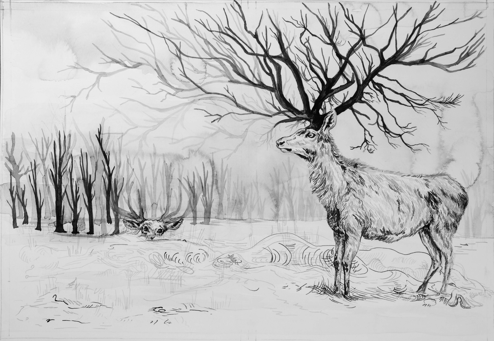

El ciervo escondido

Un leñador de Cheng se encontró en el campo con un ciervo asustado y lo mató. Para evitar que otros lo descubrieran, lo enterró en el bosque y lo tapó con hojas y ramas. Poco después olvidó el sitio donde lo había ocultado y creyó que todo había ocurrido en un sueño. Lo contó, como si fuera un sueño, a toda la gente. Entre los oyentes hubo uno que fue a buscar el ciervo escondido y lo encontró. Lo llevó a su casa y dijo a su mujer:
-Un leñador soñó que había matado un ciervo y olvidó dónde lo había escondido y ahora yo lo he encontrado. Ese hombre sí que es un soñador.
-Tú habrás soñado que viste un leñador que había matado un ciervo. ¿Realmente crees que hubo un leñador? Pero como aquí está el ciervo, tu sueño debe ser verdadero -dijo la mujer.
-Aun suponiendo que encontré el ciervo por un sueño -contestó el marido- ¿a qué preocuparse averiguando cuál de los dos soñó?
Aquella noche el leñador volvió a su casa, pensando todavía en el ciervo, y realmente soñó, y en el sueño soñó el lugar donde había ocultado el ciervo y también soñó quién lo había encontrado. Al alba fue a casa del otro y encontró el ciervo. Ambos discutieron y fueron ante un juez, para que resolviera el asunto. El juez le dijo al leñador:
-Realmente mataste un ciervo y creíste que era un sueño. Después soñaste realmente y creíste que era verdad. El otro encontró el ciervo y ahora te lo disputa, pero su mujer piensa que soñó que había encontrado un ciervo que otro había matado. Luego, nadie mató al ciervo. Pero como aquí está el ciervo, lo mejor es que se lo repartan.
El caso llegó a oídos del rey de Cheng y el rey de Cheng dijo:
-¿Y ese juez no estará soñando que reparte un ciervo?
Elaborado por:
Luis Lopéz